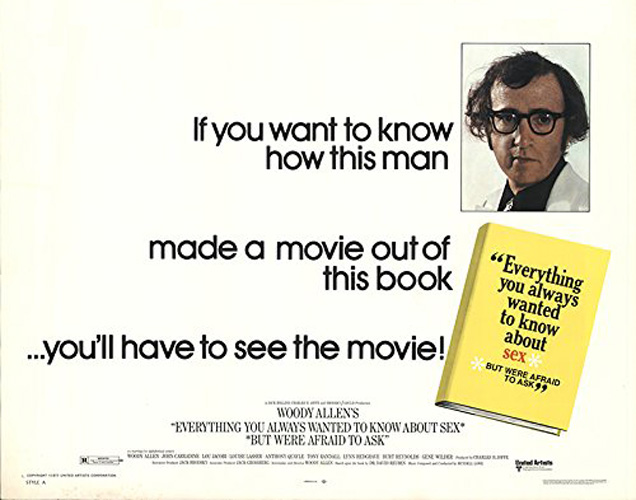
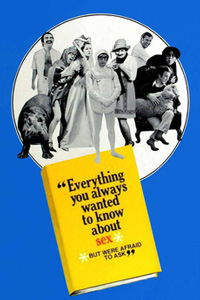
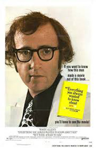
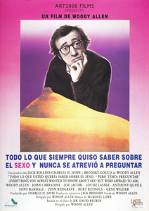
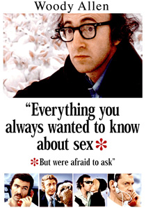
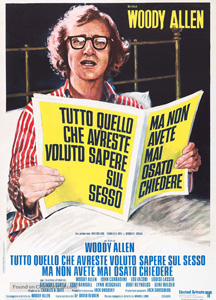
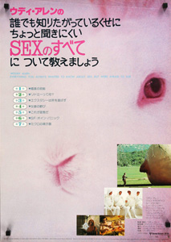

Consisting of a series of short sequences loosely inspired by the book of the same name, the film was an early smash for Allen, grossing over $18 million in North America alone against a $2 million budget, making it the 13th highest grossing film of 1972.
A segment that was filmed but eventually cut was 'What Makes a Man a Homosexual?". The sequence had Allen as a common spider and Louise Lasser playing a Black Widow. After a mating dance, the spiders make love and the Widow then eats the spider. Allen cut the sequence as he was unable to find a suitable ending for it. Some still photographs of this sequence can be seen on some versions of the film's DVD cover.
The Time Out Film Guide noted that some of the film's sketches are "dross, but the parodies of Antonioni (all angst and alienation of a wife who can achieve orgasm only in public places) and of TV panel games ('What's My Perversion?') are brilliantly accurate and very funny. Best of all is the sci-fi parody entitled 'What Happens During Ejaculation?' "
"Many of the film's ideas sound good on paper but the skits wind down rather than take off from the ideas; the film includes some broad, funny send-ups of other movies (Fantastic Voyage, La notte), and its fair share of memorably wacky lines but overall it is just … marking time and being merely a little funnier." - Time
"A minor classic and Woody Allen's most absurd film ever." - Filmcritic.com





